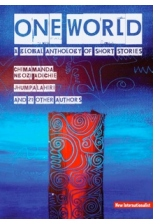

|
|
|
| | | | | | | | | | N e w s | | | | | |
| | | | | |
||
| | | | W
r i t i n g N e w s | | | | |
| | | | O
t h e r N e w s | | | | |
||
| A review is in... "In ‘Fireweed', Skye Brannon thrills
with a linguistic journey into parallel worlds. It goes to show
how much language can accomplish all by itself."  My debut story: ‘Fireweed’ is included
in this global anthology of short stories alongside Chimamanda Ngozi
Adichie, Jhumpa Lahiri, and twenty other wonderful writers. From the Introduction: “The concept of One World
is often a multi-colored tapestry into which sundry, if not contending
patterns can be woven. for those of us who worked We invite the reader on a personal journey
across continents, countries, It is available to order from the publisher, New Internationalist, or purchase on May 1st, 2009 at Amazon.com, Barnes and Noble, Powells, and many other retailers. |
| |
- One World: A Global Anthology of Short Stories is going for a third printing. Also, it is getting picked up by university and high school classes for study! Some contributors, including myself, have written some supplemental materials for educational readers that are to go out with copies of the book. - We've moved to Buenos Aires, Argentina! The website/blog originally set up for our pilgrimage across France and Spain has been revamped for our new porteno lifestyle. Check it out: If you'd like to know more about our walk along the Camino de Santiago de Compostela, click the image below.
|
|
  |
|||